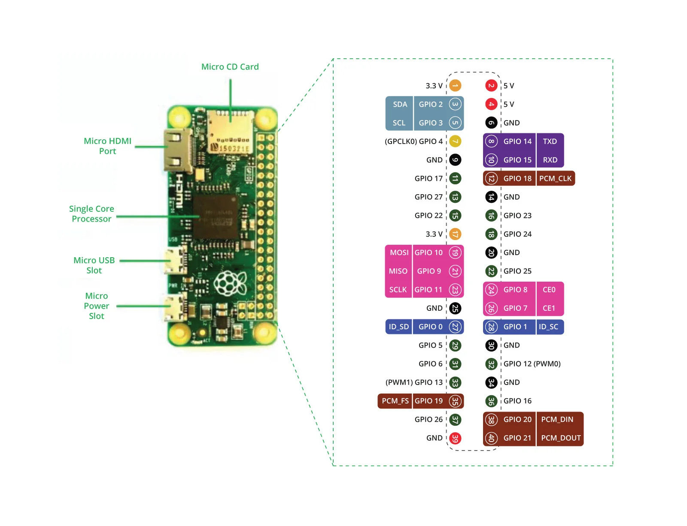

from gpiozero import LED
from time import sleep
# Inisialisasi LED pada GPIO 17 (Pin Fisik 11)
led = LED(17)
print("Memulai Program LED Blink (Tekan tombol Stop di Thonny untuk berhenti)...")
try:
while True:
led.on()
print("Status: HIGH (LED Menyala)")
sleep(1)
led.off()
print("Status: LOW (LED Mati)")
sleep(1)
except KeyboardInterrupt:
print("\nProgram dihentikan.")
led.close()
from gpiozero import LED, Button
from signal import pause
led = LED(17)
button = Button(2, pull_up=False) # GPIO 2 terhubung ke Push Button
# Registrasi Callback Event Interupsi Input
button.when_pressed = led.on
button.when_released = led.off
print("Sistem Siap! Tekan Push Button pada GPIO 2...")
pause() # Menjaga proses Python tetap aktif menantikan interupsi
Status: LOW (0)
GPIO 2: Open | GPIO 17: 0V